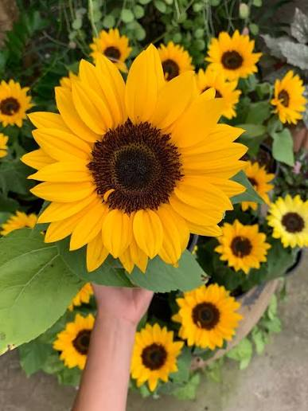
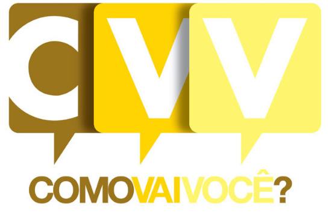

Escutar salva vidas.
O Setembro Amarelo pode mudar a sua vida e a vida de outras pessoas, por isso é importante que você: escute e cuide.
Precisando conversar agora? O CVV atende de graça, com sigilo, a qualquer hora.
Conversar com o CVVA campanha
Entenda sobre o Setembro Amarelo
Setembro Amarelo é o mês dedicado à prevenção do suicídio. Trata-se de uma campanha, que teve início no Brasil em 2015, destinada a conscientização das pessoas a atentarem para atitudes extremas, que podem levar ao suicídio, bem como evitar o seu acontecimento.
O objetivo é quebrar tabus, reduzir o estigma e incentivar que as pessoas busquem e ofereçam ajuda. O dia 10 de setembro é o Dia Mundial de Prevenção do Suicídio, data que reforça a mobilização.
- 1962O CVV é fundado em São Paulo, dedicado ao apoio emocional por voluntários.
- 2015Acontece a primeira edição do Setembro Amarelo no Brasil.
- Ano a anoO movimento cresce e mais pessoas reconhecem que conversar sobre o tema salva vidas.
- 2026O CVV lança um Guia para Imprensa sobre comunicação responsável.

O Centro de Valorização da Vida (CVV) é uma das ONGs mais antigas do Brasil. Atua na prevenção do suicídio e no apoio emocional pelo telefone 188, além de chat, e-mail e atendimento presencial.
O atendimento é gratuito, sigiloso e anônimo, e funciona 24 horas por dia. O CVV também oferece grupos de apoio, inclusive para quem perdeu alguém por suicídio.
Visitar o site do CVV
Mitos e verdades
.jpg)
Como ajudar alguém
Escute
Ofereça tempo e atenção. Não interrompa, não minimize e evite frases como "isso passa" logo de cara.
Aconselhe
Seja direto e gentil: "você pode tudo!". aconselhar e incentivar pde dar forçar para alguem.
Encaminhe
Sugira o CVV (188) ou um profissional de saúde e ofereça companhia para o primeiro passo.